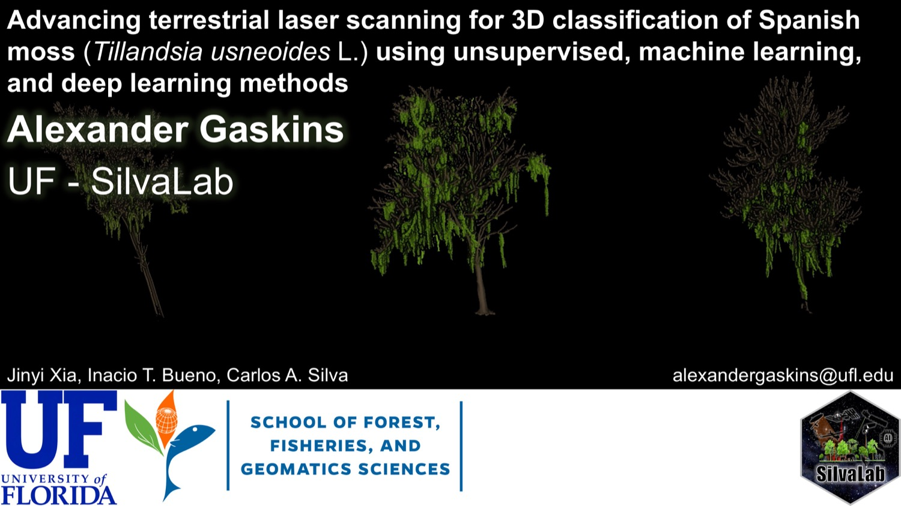
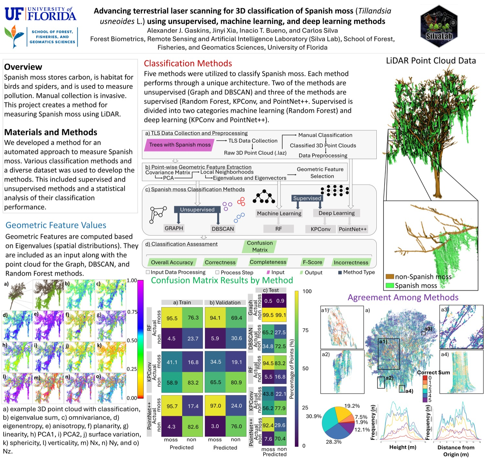

2026
Classification of Spanish moss from Terrestrial Laser Scanning 3D Point Clouds Using Unsupervised and Supervised Methods
Gaskins, A. et al. · ForestSAT 2026 · Poster
Alexander Gaskins / Presentations
Sharing research
Video recording · Watch on YouTube ↗

Presentation slides · View slides ↗

Research poster · View poster ↗
Conference contributions
Gaskins, A. et al. · ForestSAT 2026 · Poster
Gaskins, A. et al. · AGU Fall Meeting and SAF National Convention · Posters
Xia, J. et al. · AGU Fall Meeting · Poster